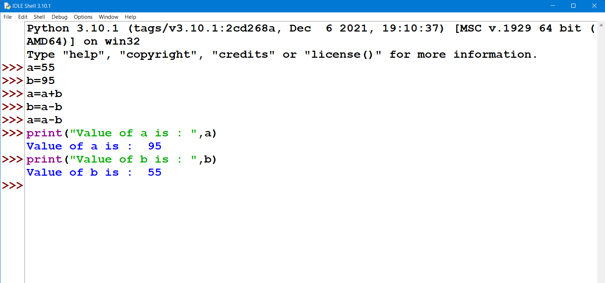

a=int(input("Enter first number(a) : "))
print(a)
b=int(input("Enter second number(b) : "))
print(b)
print"\nBefore swapping value of a is : ",a
print"Before swapping value of b is : ",b
a=a+b
b=a-b
a=a-b
print"\nAfter swapping value of a is : ",a
print"After swapping value of b is : ",b
